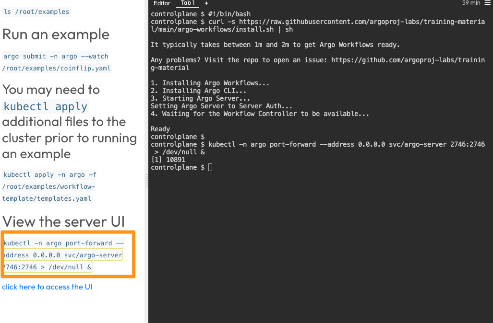
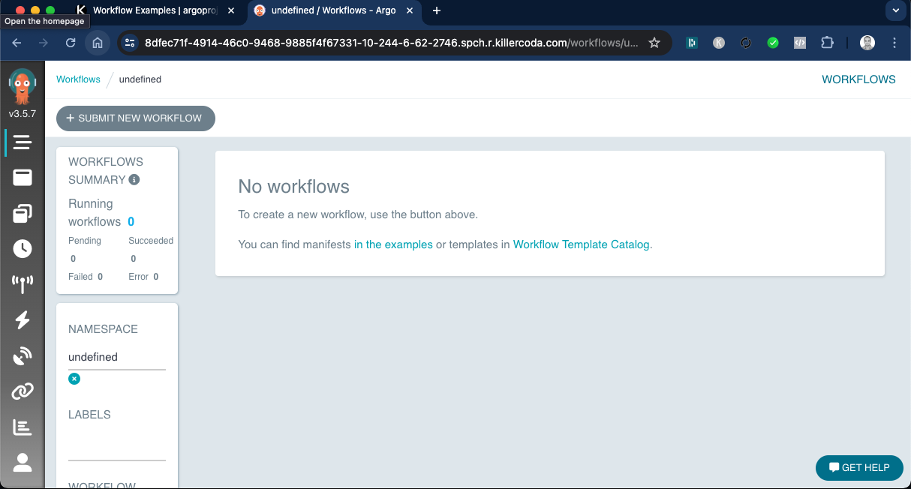

Argo Workflows
Author: Gourav Shah
Publisher: School of Devops
Version : v2024.06.03.01
Project:: Set up a Continuous Integration Pipeline with Argo Workflow.
Setting up Argo Workflow
- Signup and Login to Killercoda
- From Argo Workflows by argoproj launch
Workflow Examplesscenario - This will take a few minutes for the scenario to be ready with Argo Workflow installed

- Once set up, click on
STARTand then run the command underView the server UI

- Select
Click here to access the UIto see th Workflow Dashboard as follows

Building CI Pipeline with Argo Workflow
Before you begin, fork the repository containing source code for vote service on to your account. You are going to use this repository to set up the CI Pipeline with.
You are going to set up Argo Workflow which will build a CI Pipeline for you. This workflow will have the following stpes/stages
- clone - Clones the source code from Git and store it in a volume which is available to all subsequent steps.
- build - Build the application. In case of this python flask app, its just about checking if the dependencies are being built/instlled with python-pip.
- test - Run unit tests with python nose testing framework.
- imagebuild - Uses kaniko to build and publish container image. This step will require you to provide credentials to container registry.
Create a secret with your container registry credentials which is then used in imagebuild step of the workflow as described above with:
kubectl create secret -n argo docker-registry docker-registry-creds \
--docker-server=https://index.docker.io/v1/ \
--docker-username=xxxx --docker-password=yyyy
where replace,
xxxxwith registry usernameyyyywith registry access token
Instead of providing your password for --docker-password, it is recommended that you create a access token. For Docker Hub, you could do that as follows:
- Sign in to Docker Hub
- From top right corner where you see your profile picture, select
Account settings - From
Security->Access TokensselectNew Access Token - Add a Description/Name and set access permissions to
Read & Write

Proceed to Generate the token, and copy it to a safe location. Keep it handy as you are going to need this a few times throughout this course.
Once you have the token, proceed to create the secret with the command provided above.
Once you create the secret, create the Argo Workflow with all the necessary steps as described earlier.
File : vote-ci-workflow.yaml
apiVersion: argoproj.io/v1alpha1
kind: Workflow
metadata:
generateName: vote-ci-
spec:
entrypoint: main
arguments:
parameters:
- name: repo-url
value: "https://github.com/xxxxxx/vote.git"
- name: branch
value: "main"
- name: image
value: "yyyyyy/vote"
- name: dockerfile
value: "Dockerfile"
volumeClaimTemplates:
- metadata:
name: workspace
spec:
accessModes: ["ReadWriteOnce"]
resources:
requests:
storage: 100Mi
volumes:
- name: docker-config
secret:
secretName: docker-registry-creds
items:
- key: .dockerconfigjson
path: config.json
templates:
- name: main
inputs:
parameters:
- name: repo-url
- name: branch
- name: image
- name: dockerfile
steps:
- - name: clone
template: clone
arguments:
parameters:
- name: repo-url
value: "{{inputs.parameters.repo-url}}"
- name: branch
value: "{{inputs.parameters.branch}}"
- - name: build
template: build
- - name: test
template: test
- - name: imagebuild
template: imagebuild
arguments:
parameters:
- name: commit-sha
value: "{{steps.clone.outputs.parameters.commit-sha}}"
- name: image
value: "{{inputs.parameters.image}}"
- name: dockerfile
value: "{{inputs.parameters.dockerfile}}"
# Clone task
- name: clone
inputs:
parameters:
- name: repo-url
- name: branch
script:
image: alpine/git
command: [sh]
source: |
#!/bin/sh
git clone --branch {{inputs.parameters.branch}} {{inputs.parameters.repo-url}} /workspace
cd /workspace
COMMIT_SHA=$(git rev-parse --short HEAD)
echo $COMMIT_SHA > /workspace/commit-sha.txt
volumeMounts:
- name: workspace
mountPath: /workspace
outputs:
parameters:
- name: commit-sha
valueFrom:
path: /workspace/commit-sha.txt
# Build task
- name: build
script:
image: python:3.9
command: ["sh"]
source: |
#!/bin/sh
cd /workspace
pip install -r requirements.txt
volumeMounts:
- name: workspace
mountPath: /workspace
# Test task
- name: test
script:
image: python:3.9
command: ["sh"]
source: |
#!/bin/sh
cd /workspace
pip install nose
nosetests
volumeMounts:
- name: workspace
mountPath: /workspace
# Image build and publish task using Kaniko
- name: imagebuild
inputs:
parameters:
- name: commit-sha
- name: image
- name: dockerfile
container:
image: gcr.io/kaniko-project/executor:latest
command: ["/kaniko/executor"]
args:
- --dockerfile=/workspace/{{inputs.parameters.dockerfile}}
- --context=/workspace
- --destination={{inputs.parameters.image}}:{{inputs.parameters.commit-sha}}
- --force
volumeMounts:
- name: workspace
mountPath: /workspace
- name: docker-config
mountPath: /kaniko/.docker
env:
- name: DOCKER_CONFIG
value: /kaniko/.docker
create a workflow by providing your own repo and image tag and start watching it using the following command:
argo submit -n argo --watch vote-ci-workflow.yaml \
-p repo-url=https://github.com/xxxxxx/vote.git \
-p branch=main \
-p image=yyyyyy/vote \
-p dockerfile=Dockerfile
where,
- Replace
xxxxxxwith approapriate repo URL - Replace
yyyyyywith your docker hub user id. Update the repo name as necessary.
you could also watch the pods
watch kubectl get pods -n argo
and using dashboard as

If you were watching the workflow here is the sample output
Name: vote-ci-x5hzc
Namespace: argo
ServiceAccount: argo
Status: Succeeded
Conditions:
PodRunning False
Completed True
Created: Tue Jun 04 09:01:06 +0000 (2 minutes ago)
Started: Tue Jun 04 09:01:06 +0000 (2 minutes ago)
Finished: Tue Jun 04 09:03:50 +0000 (now)
Duration: 2 minutes 44 seconds
Progress: 4/4
ResourcesDuration: 12s*(1 cpu),2m33s*(100Mi memory)
Parameters:
repo-url: https://github.com/devops-0001/vote.git
branch: master
image: initcron/flask-app
dockerfile: Dockerfile
STEP TEMPLATE PODNAME DURATION MESSAGE
✔ vote-ci-x5hzc main
├───✔ clone clone vote-ci-x5hzc-clone-2858201196 34s
├───✔ build build vote-ci-x5hzc-build-959094096 47s
├───✔ test test vote-ci-x5hzc-test-1680485113 10s
└───✔ imagebuild imagebuild vote-ci-x5hzc-imagebuild-1986147349 43s
if you broese to DockerHub account, you should see a new image tag published as a result of the argo workflow.

Summary
With this lab you learnt how to set up a simple Continuous Integration Pipeline using Argo Workflows. This pipeline runs a sequence of jobs including build, test and container image build and publish. The result of this pipeline is a new container image available on the registry. This can be further iterated over to create conditionl logic, parallel execution of steps etc. with Argo Workflow.